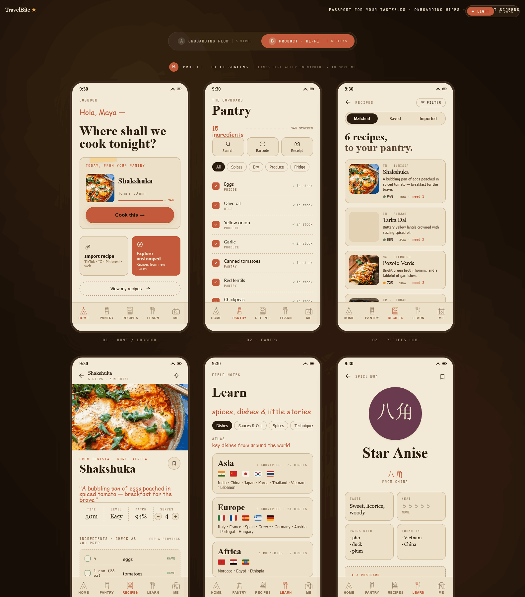

A recipe app that turns every meal you cook into a stamp on a personal food passport. Built around the idea that learning to cook the world is more rewarding than scrolling another infinite feed.

Today's recipe apps are optimized for the moment of intent — "what do I make tonight?" — and stop caring the second you close the tab. Nothing remembers what you've cooked, where it came from, or what you learned about onions last Tuesday.
For curious home cooks, that's a missed loop. The dishes that stick are the ones tied to a place, a person, a moment. The app should remember that for you.
If every cooked meal becomes a stamp on a passport, the app's job shifts from "answer the query" to "build the collection." That changes everything downstream — home screen, pantry, learn surfaces, even the icon.
I started with a one-paragraph product brief, then sketched the smallest possible flow that would prove the loop: onboard → log a meal → see it on the passport. Once the loop felt right, I built it as a working hi-fi prototype in code so I could feel the navigation friction firsthand.
Working in code (rather than Figma) forced honest decisions: real type hierarchy, real scroll behavior, real tap targets. Things that look fine static and break the second you try to use them.
The home screen is a logbook — chronological, dense with personal artifacts (stamps, postcards, notes) rather than a Pinterest grid of strangers' food. The app rewards depth, not novelty.
The Learn tab treats spices and sauces as first-class objects — each gets a card, an origin, a flavor profile. This is the surface that turns a casual cook into a curious one, and it's the surface I had the most fun designing.
Realistically, recipes come from TikTok, Instagram, Pinterest, and random blogs. The Import flow is a single paste-and-go interaction with clear source-app attribution, designed so it never competes with the source.
Realistically, recipes come from TikTok, Instagram, Pinterest, and random blogs. The Import flow is a single paste-and-go interaction with clear source-app attribution, designed so it never competes with the source.
Every screen below is real React — onboarding, pantry, recipes, cook mode, the spice and sauce libraries, import flow, and the passport. Drag, scroll, tap. Toggle dark mode in the top-left.
Eight core surfaces. Each one is a real React component in the prototype — capture individual stills from the live prototype above and add them to screens/ when you're ready.
The whole product runs on a tight system: four type families, 12 color tokens, four spice-disc sizes, 12 sauce-bottle colorways, and a single grid scale. I documented every one as a hand-off spec — what ships, where it lives, how to export it.
Designing in code is faster than I expected for hi-fi, but it tempted me to over-polish before the loop was validated. Next time I'd cap the prototype at three screens until I'd watched five strangers cook with it.
The Atlas of Flavor (Learn tab) is the surface I'm most proud of, and the one with the least obvious business model — which is probably the right tradeoff for a passion project, and the wrong one for a startup. Both are useful things to know.